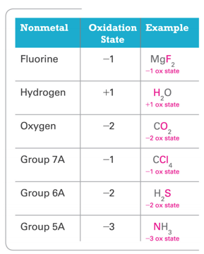
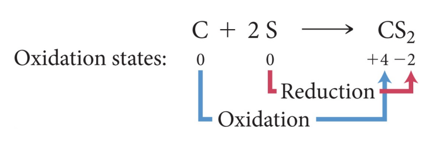
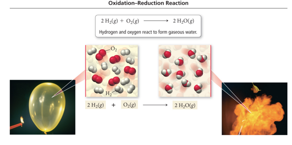
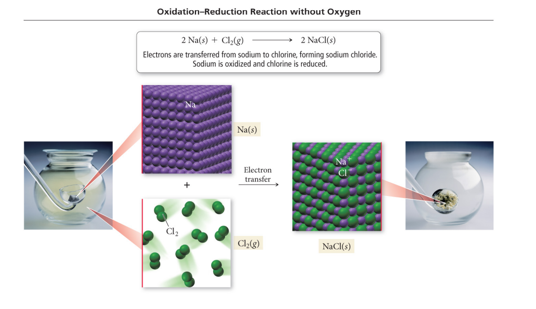

Week 12 - Day 3
Navigate using audio
- Next Wednesday is Test 3!!
Clicker 1
- Audio 0:03:32.431301
- The titration of 80.0 mL of an unknown concentration of H3PO4 solution requires 126 mL of .218 M KOH solution. What is the concentration of H3PO4 solution (in M)
- A) 1.03 M
- B) 0.343 M
- C) 0.114 M
- D) 0.138 M
- E) 0.0461 M
Oxidation–Reduction Reactions
- Audio 0:09:22.846460
- The reactions in which electrons are transferred from one reactant to the other are called oxidation–reduction reactions.
- These are also called redox reactions.
- Many redox reactions involve the reaction of a substance with oxygen.
- Examples:
- 2 C8H18(l) + 25 O2(g) → 16 CO2(g) + 18 H2O(g) (combustion)
- 2 H2(g) + O2(g) → 2 H2O(g)
- 4 Fe(s) + 3 O2(g) → 2 Fe2O3(s) (rusting)
Oxidation and Reduction (Redox)
- Audio 0:11:42.911701
- To convert a free element into an ion, the atoms must gain or lose electrons.
- NOTE: If one atom loses electrons, another must accept them.
- Atoms that lose electrons are being oxidized.
- The reaction is referred to as oxidation.
- Atoms that gain electrons are being reduced.
- The reaction is referred to as reduction.
- Audio 0:14:01.108735
- Example: 2 Na(s) + Cl2(g) → 2 NaCl(s)
- Audio 0:14:42.939831
- Na → Na+ + 1 e– (oxidation; sodium lost electrons)
- Cl2 + 2 e– → 2 Cl– (reduction; chlorine atom gained electrons)
Redox Reactions
- Audio 0:15:20.876721
- Oxidation and reduction must occur simultaneously.
- If an atom loses electrons, another atom must take them.
- The reactant that reduces an element in another reactant is called the reducing agent.
- The reducing agent contains the element that is oxidized.
- The reactant that oxidizes an element in another reactant is called the oxidizing agent.
- The oxidizing agent contains the element that is reduced.
- Example: 2 Na(s) + Cl2(g) → 2 NaCl(s)
- Na is oxidized, while Cl is reduced.
- Na is the reducing agent, and Cl2 is the oxidizing agent.
Oxidation States: “Electron Book Keeping”
- Audio 0:19:09.006032
- For reactions that are not metal + nonmetal, or do not involve O2, a method for determining how the electrons are transferred is required to determine which element is being oxidized and which element is being reduced.
- Chemists assign a number to each element in a reaction called an oxidation state that allows them to determine the electron flow in the reaction.
- Audio 0:20:40.459510
- Even though they look like them, oxidation states are not ion charges!
- Oxidation states are imaginary charges assigned based on a set of rules.
- Ion charges are real, measurable charges.
Rules for Assigning Oxidation States
- Audio 0:23:41.166326
- The following rules are in order of priority:
- Free elements have an oxidation state = 0.
- Na = 0 and Cl2 = 0 in 2 Na(s) + Cl2(g)
- Monatomic ions have an oxidation state equal to their charge.
- Na = +1 and Cl = −1 in NaCl
- (a) The sum of the oxidation states of all the atoms in a compound is 0.
- Na = +1 and Cl = −1 in NaCl, (+1) + (−1) = 0
- Free elements have an oxidation state = 0.
Rules for Assigning Oxidation States Continued
- Audio 0:25:29.324643
- (b) The sum of the oxidation states of all the atoms in a polyatomic ion equals the charge on the ion.
- N = +5 and O = −2 in NO3 –, (+5) + 3(−2) = −1
- (a) Group I metals have an oxidation state of +1 in all their compounds.
- Na = +1 in NaCl
- (b) Group II metals have an oxidation state of +2 in all their compounds.
- Mg = +2 in MgCl2
- In their compounds, nonmetals have oxidation states according to the following table.
- Nonmetals higher on the table take priority.
- (b) The sum of the oxidation states of all the atoms in a polyatomic ion equals the charge on the ion.
Rules for Assigning Oxidation States
- 
Practice Problem: Assigning Oxidation States
- Audio 0:28:14.744310
- Assign an oxidation state to each atom in each element, ion or compound (a) Cl2 (b) Na+ (c) KF (d) CO2 (e) SO4^2- (f) K2O2
Clicker 2
- Audio 0:35:08.680784
- Determine the oxidation state of nitrogen in NO2
- A) +5
- B) +3
- C) 0
- D) +2
- E) +4
Identifying Redox Reactions
- Audio 0:36:40.373032
- Oxidation: An increase in oxidation state
- Reduction: A decrease in oxidation state
- 
- Carbon changes from an oxidation state of 0 to an oxidation state of +4.
- Carbon loses electrons and is oxidized.
- Sulfur changes from an oxidation state of 0 to an oxidation state of –2.
- Sulfur gains electrons and is reduced.
- Carbon changes from an oxidation state of 0 to an oxidation state of +4.
Redox Reaction
- Audio 0:37:34.617890
- NOTE:
- The transfer of electrons does not need to be a complete transfer (as
occurs in the formation of an ionic compound) for the reaction to
qualify as oxidation–reduction.
- For example, consider the reaction between hydrogen gas and chlorine gas:
- H2(g) + Cl2(g) → 2 HCl(g)
- For example, consider the reaction between hydrogen gas and chlorine gas:
- When hydrogen bonds to chlorine, the electrons are unevenly shared, resulting in:
- An increase of electron density (reduction) for chlorine
- A decrease in electron density (oxidation) for hydrogen
Combustion as Redox
- 2 H2(g) + O2(g) → 2 H2O(g)
- Hydrogen and Oxygen reacts to form water in the gaseous state (steam).
- 
Practice Problem: Oxidation States and Identifying
- Audio 0:39:01.686365
- What Is Being Oxidized and What Is Being Reduced Use oxidation state to identify the element that is oxidized and the element that is reduced:
- Mg(s) +2 H2O(l) à Mg(OH)2(aq) + H2(g)
Clicker 3
- Audio 0:39:32.867693
- What element is undergoing reduction (if any) in the following reaction?
- Zn(s) + 2AgNO3(aq) -> Zn(NO3)2(aq) + 2 Ag(s)
- A) Zn
- B) N
- C) O
- D) Ag
- E) This is not an oxidation-reduction reaction
Redox without Combustion
- 2 Na(s) + Cl2(g) → 2 NaCl(s)
- Sodium metal transfers electrons to chlorine gas to form solid sodium chloride. The sodium metal is reduced and chlorine is oxidized.
- 
Practice Problem: Oxidation States and Identifying
- What Is Being Oxidized and What Is Being Reduced
- Determine whether or not each reaction is an oxidation-reduction reaction. For each oxidation-reduction reaction, identify the oxidizing agent and the reducing agent.
- a) 2 Mg(s) + O2(g) à 2 MgO(s)
- b) 2HBr(aq) + Ca(OH)2(aq) à 2 H2O(l) + CaBr2(aq)
- c) Zn(s) + Fe2+(aq) à Zn2+(aq) + Fe(s)
Vocab
| Term | Definition |
|---|---|
| titration | when a substance in a solution of known concentration is reacted with another substance in a solution of unknown concentration |
| equivalence point | when exactly enough solution has been added the reactants are in their stoichiometric ratio |
| indicator | chemical that changes color when the solution undergoes large changes in acidity/alkalinity |
| endpoint | when the indicator changes color during titration |
| equivalence point | when the number of moles of H+ equals the number of moles of OH– in an acid-base titration |
| oxidation | when atoms lose electrons |
| reduction | when atoms gain electrons |
| reducing agent | contains the element that is oxidized in a redox reaction |
| oxidizing agent | the reactant that oxidizes an element in another reactant in a redox reaction |
| oxidation–reduction reactions | reactions in which electrons are transferred from one reactant to the other |